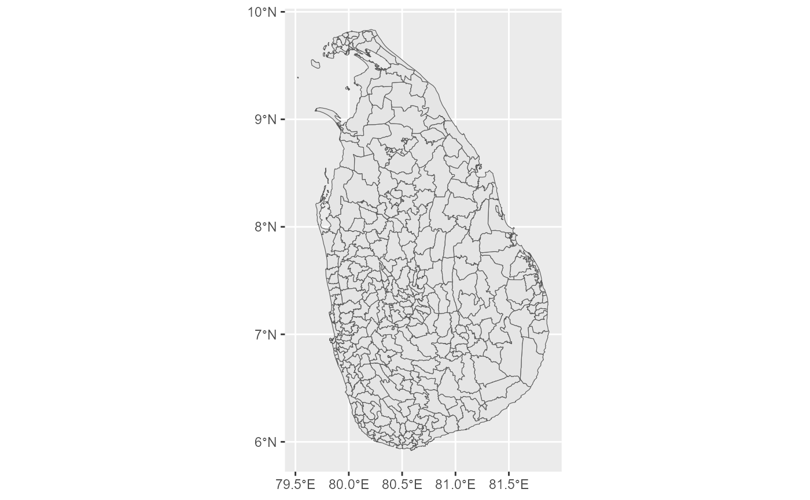

Return an spatial object using sf.
One of "gbOpen", "gbHumanitarian",
"gbAuthoritative"`. Source of the spatial data. See Details.
A character vector of country codes. It could be either
"ALL" (that would return the data for all countries), a vector of country
names or a vector of ISO3 country codes. Mixed types (as
c("Italy","ES","FRA")) would not work. See also
countrycode::countrycode().
Type of boundary Accepted values are "ALL" (all
available boundaries) or the ADM level ("ADM0" is the country boundary,
"ADM1" is the first level of sub national boundaries, "ADM2" is the
second level and so on.
Logical. Return the simplified boundary or not.
Should the result be the metadata of the boundary? See Details.
Logical, displays information. Useful for debugging,
default is FALSE.
A logical whether to update cache. Default is FALSE.
When set to TRUE it would force a fresh download of the source
.geojson file.
A path to a cache directory. See geobn_set_cache_dir().
When metadata = FALSE: A sf object, otherwise a tibble.
TODO....
geoboundaries API Service https://www.geoboundaries.org/api.html.
# \donttest{
sri_lanka <- get_geobn(
country = "Sri Lanka", boundary_type = "ADM3",
simplified = TRUE
)
sri_lanka
#> Simple feature collection with 330 features and 5 fields
#> Geometry type: GEOMETRY
#> Dimension: XY
#> Bounding box: xmin: 79.51937 ymin: 5.918507 xmax: 81.8772 ymax: 9.835718
#> Geodetic CRS: WGS 84
#> # A tibble: 330 × 6
#> shapeName shapeISO shapeID shapeGroup shapeType geometry
#> * <chr> <chr> <chr> <chr> <chr> <GEOMETRY [°]>
#> 1 Manmunai Sou… "" 854035… LKA ADM3 POLYGON ((81.81611 7.459…
#> 2 Koralai Patt… "" 854035… LKA ADM3 MULTIPOLYGON (((81.51482…
#> 3 Thenmaradchi… "" 854035… LKA ADM3 MULTIPOLYGON (((80.18725…
#> 4 Manmunai Sou… "" 854035… LKA ADM3 MULTIPOLYGON (((81.64394…
#> 5 Manmunai Pat… "" 854035… LKA ADM3 POLYGON ((81.78383 7.601…
#> 6 Koralai Pattu "" 854035… LKA ADM3 MULTIPOLYGON (((81.51629…
#> 7 Porativu Pat… "" 854035… LKA ADM3 POLYGON ((81.64394 7.522…
#> 8 Eravur Pattu "" 854035… LKA ADM3 POLYGON ((81.54727 7.534…
#> 9 Mundel "" 854035… LKA ADM3 POLYGON ((79.82017 7.966…
#> 10 Addalaichenai "" 854035… LKA ADM3 POLYGON ((81.86513 7.300…
#> # ℹ 320 more rows
library(ggplot2)
ggplot(sri_lanka) +
geom_sf()

# }
# Metadata
library(dplyr)
#>
#> Attaching package: 'dplyr'
#> The following objects are masked from 'package:stats':
#>
#> filter, lag
#> The following objects are masked from 'package:base':
#>
#> intersect, setdiff, setequal, union
get_geobn(
country = "Sri Lanka", boundary_type = "ADM3",
metadata = TRUE
) %>%
glimpse()
#> Rows: 1
#> Columns: 32
#> $ boundaryID <chr> "LKA-ADM3-8540358"
#> $ boundaryName <chr> "Sri Lanka"
#> $ boundaryISO <chr> "LKA"
#> $ boundaryYearRepresented <chr> "2020"
#> $ boundaryType <chr> "ADM3"
#> $ boundaryCanonical <chr> "Divisional Secretariat"
#> $ boundarySource <chr> "OCHA ROAP, Survey Department of Sri Lanka"
#> $ boundaryLicense <chr> "Creative Commons Attribution 3.0 Intergover…
#> $ licenseDetail <chr> NA
#> $ licenseSource <chr> "data.humdata.org/dataset/sri-lanka-administ…
#> $ boundarySourceURL <chr> "data.humdata.org/dataset/sri-lanka-administ…
#> $ sourceDataUpdateDate <chr> "Thu Jan 19 07:31:04 2023"
#> $ buildDate <chr> "Dec 12, 2023"
#> $ Continent <chr> "Asia"
#> $ `UNSDG-region` <chr> "Central and Southern Asia"
#> $ `UNSDG-subregion` <chr> "Southern Asia"
#> $ worldBankIncomeGroup <chr> "Lower-middle-income Countries"
#> $ admUnitCount <dbl> 330
#> $ meanVertices <dbl> 4097
#> $ minVertices <dbl> 286
#> $ maxVertices <dbl> 30321
#> $ meanPerimeterLengthKM <dbl> 87.90021
#> $ minPerimeterLengthKM <dbl> 6.072107
#> $ maxPerimeterLengthKM <dbl> 322.9302
#> $ meanAreaSqKM <dbl> 200.0581
#> $ minAreaSqKM <dbl> 1.813479
#> $ maxAreaSqKM <dbl> 1060.133
#> $ staticDownloadLink <chr> "https://github.com/wmgeolab/geoBoundaries/r…
#> $ gjDownloadURL <chr> "https://github.com/wmgeolab/geoBoundaries/r…
#> $ tjDownloadURL <chr> "https://github.com/wmgeolab/geoBoundaries/r…
#> $ imagePreview <chr> "https://github.com/wmgeolab/geoBoundaries/r…
#> $ simplifiedGeometryGeoJSON <chr> "https://github.com/wmgeolab/geoBoundaries/r…